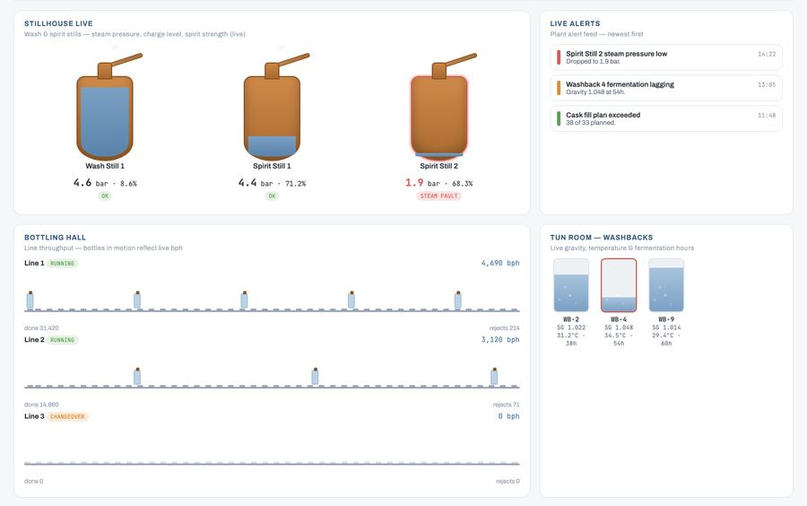

IoT telemetry and plant connectivity
Every meaningful signal on the plant floor collected once, normalised, and made available to everything downstream.
- One trusted signal per asset
- Gaps visible, not silent
- No clipboard rounds
Each module deploys on its own and every one reads from the same telemetry and the same batch record, so the plant view and the management view cannot disagree.
Every meaningful signal on the plant floor collected once, normalised, and made available to everything downstream.
A working replica that shows what every vessel is doing right now, not what it did last shift.
Every brew and every fermentation tracked against its intended profile, from mash to bright beer tank.
The spirit side end to end: run profiles, cut points, spirit account, cask inventory and the history inside a blend.
Where the extract, the spirit and the packaged volume actually go, stage by stage, priced in money.
Joins the historian, the laboratory and the line logs into one investigable record, and turns a taste complaint into a testable cause.
The plant's biggest variable cost, measured per stage and per unit of product rather than per monthly invoice.
The statutory record assembled from the same data the plant already produces, rather than rebuilt by hand each period.
Plain language questions over plant and business data, answered with the batch and tag references behind them.
A plant schematic that redraws itself from live readings. Vessel states, temperatures, gravities and flows update as they change, so a stalled ferment or a stuck valve is visible from a phone rather than at the next shift handover.

Built on the one data foundation, so the floor view and the board view are the same figures at different altitudes.
We read from the systems on site over standard protocols. Nothing is written back to anything that runs the operation, so no integration changes how you make product.
See it against your own tags rather than a demo dataset. One call, one week of data, no commitment.
Bring a tag list and a month of history. We will show you what the twin and the yield model do with it.